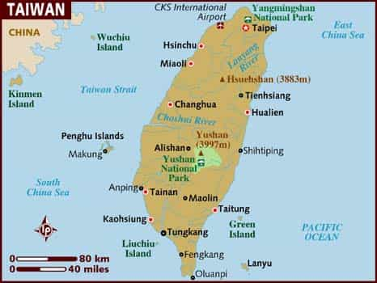

The East Asian region is dominated by economically and geopolitically powerful states such as China and Japan, and tertiary South Korea. Taiwan, often referred to as the the Republic of China, is relatively small in comparison.
However, due its relative wealth, high level of democracy, largely superb infrastructure and beautiful scenery, both younger and older males can find something of value here. In fact, I regard this as one of the most optimal destinations for travel or a more extensive visit. Thus in this article I intend to describe contemporary Taiwan in a nuanced way, and inform the reader about what this country has to offer from the aspect of travel or temporary migration.
The emergence of Taiwan
Taiwan has been colonized since the early 17th century onwards. In earlier phases of the island’s history, the only locally dominant group was those who are nowadays collectively labelled Taiwanese aborigines, a population of Austronesian ancestry who managed to chase away earlier Chinese conquerors who stepped their feet on the island. The first successful colonizers were linked to the Dutch East India Company and later the Spanish Empire (northern area), followed by Chinese during the Qing dynasty (1683-1895), Japan until the end of World War II, and eventually Chinese nationalists who fled to the country in 1949 in the aftermath of the Chinese civil war. Basically, a number of sub-groups of Han Chinese migrants are now the locally dominant group which makes up today’s Taiwanese people. Aborigines make up only about 2%.
The nationalist party Kuomintang (KMT), formed in 1912 and which even ruled mainland China 1928-1949, has been largely dominant in Taiwan after 1949. Its hegemony, though, has been severely undermined by other parties, not the least the liberal-oriented Democratic Progressive Party – now the country’s largest – during the advent of democracy in the mid-80s and forward. The partial americanization of Taiwan is linked to the technocratic and democratic reforms during the last three-four decades.
The contentious relationship with mainland China and The U.S. is a topic that could be further addressed, and the situation is perhaps increasingly tense due to President-elect Donald Trump’s capricious (?) greetings after his conversation with the current president of ROC, Tsai Ing-wen. In short, Taiwan is a geopolically significant player on the global chessboard. A pawn, surrounded by larger forces that make it into a symbol for hegemonic struggle. Hopefully the stalemate can continue for the sake of all involved competitors.

The years of fundamental industrialization under Japanese rule and martial law between 1949-1987 now appear distant. Taiwan is currently a high-tech nation with a GDP per capita size which places it as the 22th wealthiest nation in the world, according to IMF.
What modern Taiwan has to offer
Some Portugese explorers who visited Taiwan called it Ilha Formosa, the beautiful Island, and rightly so. Taiwan, both the main island, and various smaller islands along the coastal lines, are indeed very pleasing to the eye. It is a green and mountainous country, with vast areas of unpopulated land. Although being very densely populated in city regions, it is not very difficult to move outside of the urban landscapes and find nature. National parks such as Taroko National Park and Yushan National Park offer beautiful scenery and great opportunities for hiking.
A traveler can of course choose different routes within Taiwan, but I would say that to travel along the east coast is the best choice. If one has more than 10 days, then I would suggest the Penghu Islands as the secondary destination after the east coast. The east coast is not integrated into the bullet train railway system, but the distances are not that extensive and one can go from Taipei to Taitung within 5-6 hours.

Besides from the National Palace Museum, I would suggest several visits to some of the capital city’s Taoist and Confucian temples. Remember that these are the true religio-cultural and philosophical systems of the world’s greatest civilization (besides the West). I am not a Confucianist or Taoist but I find some ideas interesting, even accurate, and do respect them.
Game and girls
When I stress that this country is a more or less optimal travel destination it is because the relatively low price levels, safety, scenery and well-developed infrastructure, rather than the level of female talent. But with the rise of global-Western culture and the Korean wave spreading across the region, some of all of these thin girls tend to turn hotter and might be pursued as at least short-term flings.
For the game-oriented person, several strategies can work. Perhaps with an overbalance to night game, online game and social connections. A Westerner who works as an English teacher or study overseas have the time and opportunity to meet girls by means of any relevant method.
Since Taiwan is overall a well-educated and status-oriented nation, one’s image could be at least slightly adjusted. In the West you play the clown, whereas in the East you are more like a talking and walking CV with humility written all over it to cover the big letters. With the best from a well-groomed look and a good job and/or educational background, East Asians and Southeast Asians will respond well to a balanced world game.
For the traveler who only has a limited amount of time (less than a month), I think that preparatory game through apps such as OkCupid and HelloTalk can be useful in order to obtain more options close to arrival. Focus only on Taipei. This should, of course, be complemented with several night club visits, creating a possible interplay between night time fun and daytime dates. Since club venues in Asian cities come and go, it is wise to keep updated and try to pinpoint the most optimal places with a large degree of cosmopolitan girls but without too much hookers and/or expat male competition.
Just stay at a hostel or hotel and try to get lucky, and if it is worthwhile, try to rent a room for a couple of weeks. If one has zero social connections then hostels can be an option in order to met momentary mates, but since hotels often are so cheap (one can find a 3-star hotel for 25 dollars) it seems generally preferable.
Regarding talent in Taipei, one can expect about the same average levels as in mainland China, Hong Kong, South Korea and Japan. Alternative assertions on the supposed hotness or ugliness of Taiwanese girls are likely exaggerations. With that said, from the totality of information from the Roosh V Forum, other relevant websites, and my own experiences, they are slightly harder to get laid than Japanese girls but easier than Koreans. If to get laid is your sole purpose for travel, then I would suggest Thailand or the Philippines instead.
Trip schedule suggestion:
Taipei day 1: Visit the National Palace Museum. Day game and online game.
Taipei day 2: Visit Yulin village. Day game and online game. Visit Dalongdong Baoan Temple.
Taipei day 3: Check out the metropolitan area and do some night game, forn instance at Elektro (earlier Club Spark 101).
Taroko National Park day 4: After departure early in the morning spend almost the entire day in Taroko National Park. Walk along the Shakadang River Trail. Make sure to digress from the tourist groups after about 2 hours. Then you will have an entire valley for yourself. Meditate or just simply behold the beautiful landscape.
Take the train to the town Yuli and sleep at a budget hotel. Make sure to rent a bike early in the morning.
Walami Trail day 5: Get up early and ride with a mountain bike until the point of departure of the Walami trail. Bring loads of water and snacks. Hike uphill in the rainforest for 4-8 hours. Make sure to not miss the best waterfall. Head to Taitung with train in the evening.
Green Island day 6: While on Green Island the day after, ride with an electronic bike or scooter around the island. Visit the beaches around the lighthouse and eat some fresh seafood.
Green Island day 7: Continue to go around the island. Try snorkeling or scuba diving. Visit the Chaorih Hot Spring in the evening.
Taipei day 8: Take the ferry back to Taitung early and the train back to Taipei. Continue gaming.
Taipei day 9: Explore the city. Do night game.
Taipei day 10: Visit some more temples and parks. Do more night game.

Conclusion
Overall Taiwan is a great destination for travel and perhaps longer visits. It is not the most optimal place for love tourism, but on the other hand one of the best choices if one takes into account culture, price levels, quality of infrastructure, and scenery.
Read More: What Modern South Korea Is Like